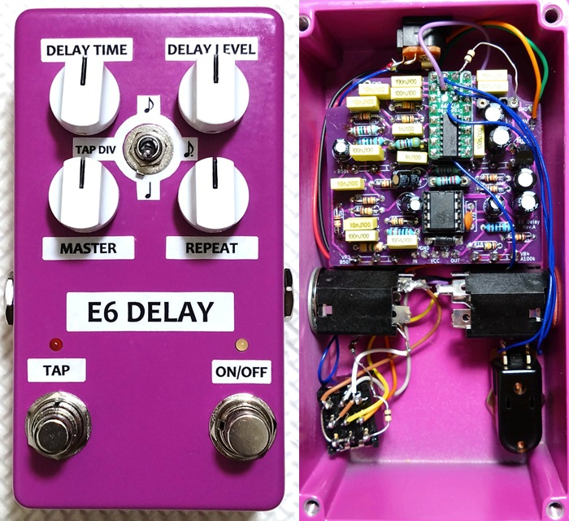
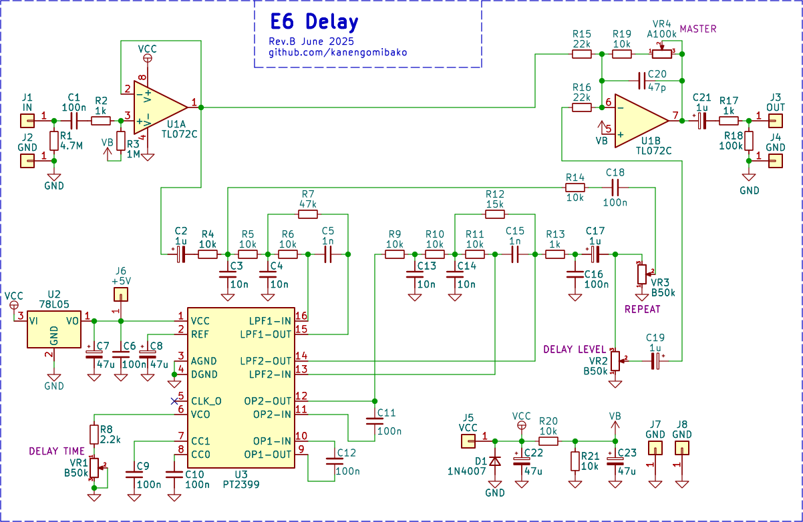
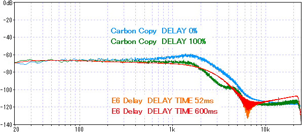
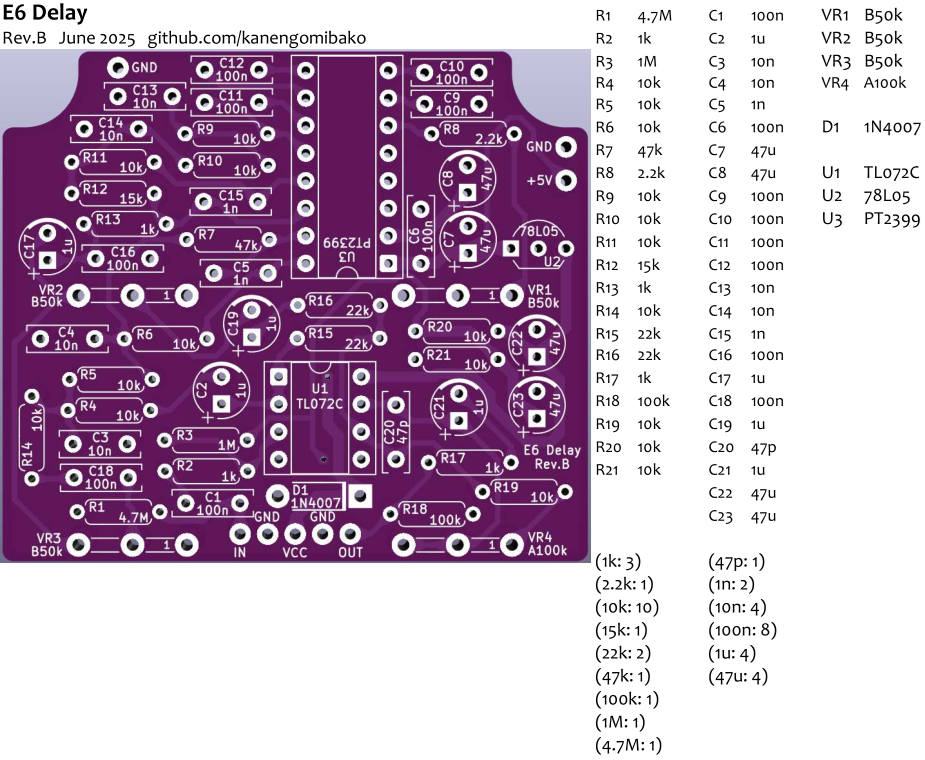

E6 Delay
2025年07月04日 カテゴリー：自作エフェクター（アナログ）

Tonepad Rebote 2.5 Delayをベースに、E6系列の部品を用いて製作しやすくしたエフェクターです。DropInTap PT2399を使用し、タップテンポ入力に対応しています。PT2399の解説についてはElectroSmash - PT2399 Analysisや過去記事（PT2399 周辺コンデンサ検討）をご参照ください。
→ 基板販売ページはこちら ※DropInTap PT2399は別売りです。
ケース
Tayda Electronicsの125Bタイプ（Matte Violet）を使用しています。サイズは122mm x 66mm x 39.5mmで、HAMMOND 1590N1と同等です。BOSSのコンパクトペダル（底面120mm x 65mm）に近いサイズ感で、使いやすいと思います。高さがあるため、トグルスイッチやデュアルポットを使っても余裕があります。フットスイッチの間隔は約44mmで、ジャックをトップ面寄りに配置すれば電池の収納もできそうです。
回路図
入力
Reincarnation Chorusと同様、非反転バッファとしました。最終的に出力は反転しますが、実用上問題ないと考えています。他のPT2399を使ったディレイエフェクターでは、出力が反転するのを避けるためなのか、入力に反転バッファを用いる設計が多く見られます。
出力
マスターボリュームを設けました。回路としてはゲイン調節のポットとなっています。このポットを省く場合、R19を22kΩに変更してポットの1-2番間をジャンパー（0Ω）で接続してください。
最短ディレイタイム
R8の値を小さくすると最短ディレイタイムを30msまで短縮可能ですが、追加の回路が必要となります。詳細はPT2399 Analysisを参照してください。
最大入出力電圧
SN比をよくするには、できるだけ大きい音量でPT2399に入力します。ただし、PT2399の最大入出力電圧は3.5Vp-pと低めです。入力のローパスフィルター（LPF）部分で増幅しすぎるとクリッピングの可能性がありますが、高音域がカットされているため多少歪んでも目立ちにくいです。
ディレイ音の周波数特性（Carbon Copyと比較）

Carbon Copyはディレイタイムによって周波数特性が変わります。一方、PT2399は入力音量が大きいほど高音域が減衰する特性があります（→ PT2399 周辺コンデンサ検討）。
好みの音質にするには、PT2399の前後の3次LPFを調整します。Deep Blue Delayのような2次LPFでもよいですが、ノイズが目立つ可能性があります。
{kind=link}
基板
C6、C9、C10（全て100nF）は、積層セラミックコンデンサでも大丈夫です。ポットは基板に直付け可能な設計で、左右間隔30mm、上下間隔23mmです。